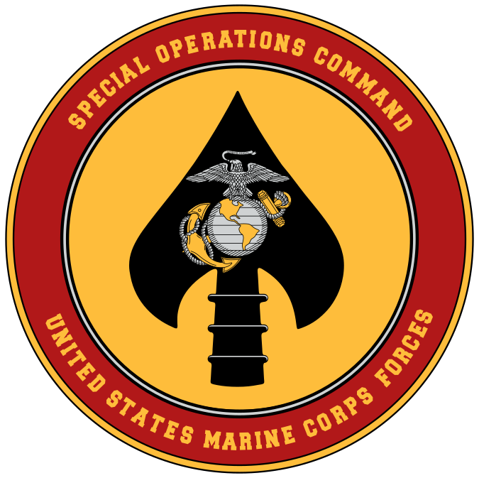

Special Unit History of the Marine Corps
The United States Marine Corps has a long and storied history of elite units that have distinguished themselves in combat and special operations. From the legendary Marine Raiders of World War II to the modern-day Marine Special Operations Command (MARSOC), these units have played a crucial role in the Marine Corps' mission to project power and respond to crises around the world. This website will explore the history, missions, and achievements of these elite units, highlighting their contributions to the Marine Corps and the United States military as a whole.
